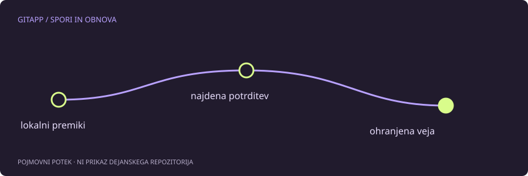

Kaj dnevnik referenc beleži
reflog beleži lokalne spremembe položajev referenc, na primer premike HEAD pri preklopih in ponastavitvah. Če si premaknil vejo in ne najdeš več potrditve v običajnem pogledu zgodovine, je lahko ta dnevnik uporabna sled.
Ne gre za seznam vseh datotek, ki so kdaj obstajale na računalniku. Besedilo, ki nikoli ni bilo shranjeno v Git, praviloma ni čudežno dosegljivo prek dnevnika. Tudi izbrisana nesledena datoteka ni nujno Gitov objekt.
Preglej, preden obnavljaš
Za začetek uporabi omejen prikaz:
git reflog --date=iso -n 15Izpis vsebuje identifikatorje in opise lokalnih premikov. Poišči dogodek glede na čas in okoliščine, potem si oglej kandidatno potrditev z git show. Vrstni red dogodkov v tvojem klonu ni nujno enak vrstnemu redu pri sodelavcu.
Najprej ustvari referenco, ne premikaj obstoječe veje
Ko zanesljivo prepoznaš pravo potrditev, ji lahko ustvariš novo vejo z edinstvenim imenom in njenim identifikatorjem. To ohrani dostop, ne da bi najprej premaknil trenutno vejo ali prepisal delovno drevo.
V tem koraku ne uporabljaj generičnega identifikatorja iz vodiča. Vsak repozitorij ima svoje dejanske objekte. Če ukaz javi, da objekt ne obstaja, ne nadomeščaj preverjanja z naključnim podobnim zapisom.
Omejitve lokalnega zapisa
Dnevnik referenc je lokalen in se ne prenaša kot običajna skupna zgodovina. Pravila hranjenja in čiščenje lahko odstranijo stare zapise ter nedosegljive objekte. Zato navodilo »vedno lahko vse vrneš z reflog« ni pravilno.
Če je bila sprememba potrjena v drugem klonu, je lahko boljši vir ta klon ali oddaljena veja. Če je obstajala samo v urejevalniku, preveri njegove obnovitvene mehanizme oziroma neodvisno varnostno kopijo.
Ne sproži dodatnega čiščenja
Ko iščeš izgubljeno delo, ne izvajaj agresivnega čiščenja objektov ali odstranjevanja metapodatkov. Dodatni posegi lahko zmanjšajo možnosti obnove in otežijo razumevanje dogajanja. Najprej zabeleži stanje in ohrani kopijo, kadar je to izvedljivo.
Po najdbi preveri vsebino
Uspeh ni zgolj veja z obetavnim imenom. Preveri datoteke, zgodovino in odvisnosti projekta. Najdena potrditev je lahko vmesni posnetek, ne zadnja želena različica.
Za prihodnje delo združi jasne potrditve, namerno pošiljanje in neodvisno varnostno kopiranje pomembnih datotek. Git lahko močno pomaga pri sledenju potrjenemu delu, ni pa nadomestilo za vsako vrsto varovanja podatkov.
Vir in obseg
Referenca: uradni priročnik za git-reflog. Primeri so pripravljeni za učenje in niso opis posega v dejanski projekt. Preberi način preverjanja.